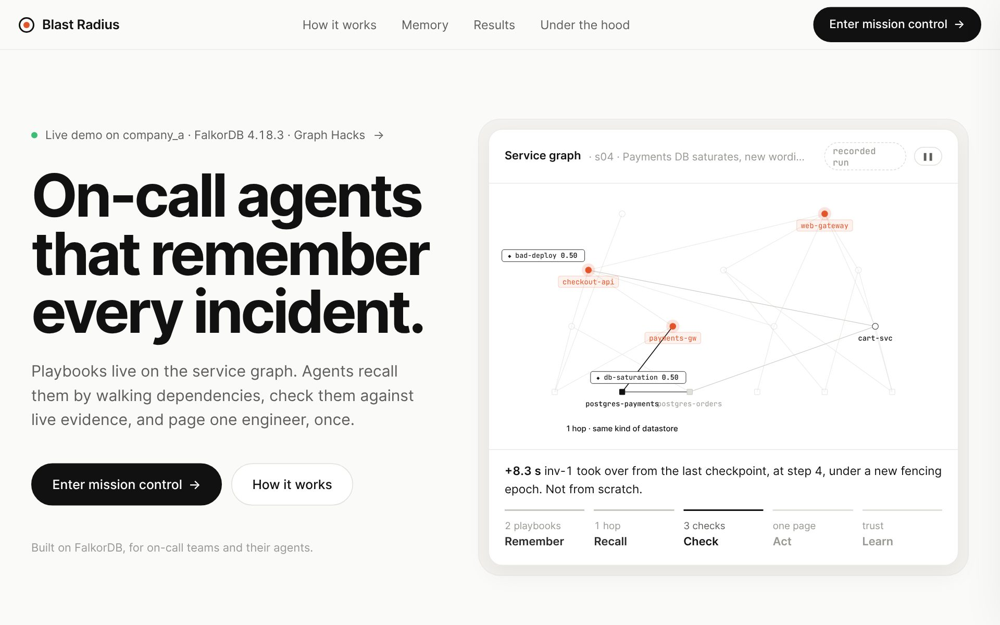

Teaching on-call agents to remember.
We built a team of incident agents that keep their memory on the service graph, check every memory against live evidence before trusting it, and carry on when one of them is killed mid-investigation. Here is how it works, what we measured, and what FalkorDB taught us along the way.
- Memory lives on the graph. A confirmed fix becomes a playbook pinned to the service that failed.
- Recall is a walk. Agents find playbooks by walking the dependency graph from the alerting services.
- Nothing is trusted unchecked. Each playbook's checks run against live evidence first; trust moves only on verdicts.
- A crash is a handover. Leases, fencing epochs and checkpoints in the graph let a second agent continue at the next step.
The 3 a.m. problem, now with agents.
When production breaks at 3 a.m., the on-call engineer usually starts from zero. Somebody fixed something very similar last month, and it is written down in a postmortem that nobody will find in time. We wanted agents that help with incidents, and quickly found that they have the same problem, plus two of their own.
- They start from scratch. Every incident is a fresh investigation, every tool call paid for again.
- They trust old memory blindly. Give an agent notes from past incidents and it will happily follow a note that does not apply.
- They crash. An agent dies mid-investigation and either the work is lost, or a second agent redoes it and the engineer gets paged twice.
The fix from last month is in a postmortem nobody reads. We wanted it to be the first thing the next agent checks.
The wording changes. The system doesn't.
Our first instinct was a vector store of past incidents. The trouble is that two outages with the same cause are often described differently. When the orders database saturated last week the alerts said “p95 latency above SLO” on the cart service. When the payments database saturates today, they say “slow responses breaching SLO” on the payments gateway. Text similarity sees two unrelated incidents.
The dependency graph sees the same thing twice: an alerting service, one hop upstream of a postgres datastore that is out of connections. So we pin each playbook to the node where it was learned, and recall by walking the graph. Try it on the same alert:
An illustration of the idea, with four notes. The measured numbers over 20 incidents are in Results: text similarity found the right memory 55% of the time, the graph walk 100%.
Three minutes, start to finish.
The video walks through the whole loop on a synthetic company of nine services and six datastores: a first incident with nothing in memory, a full database restart, a related outage where we kill the investigator mid-task, and an outage with the same symptoms but a different cause.

▶Demo videoUploading soon · meanwhile, the clips below are recorded from the running systemFour agents, one graph, nothing else shared.
Blast Radius is four kinds of agent that never talk to each other directly. Everything they know and everything they hand over is a node or an edge in one FalkorDB graph per company.
The loop runs in this order, every time:
- Triage turns alerts into an
Incidentand aninvestigatetask. - An investigator claims the task, recalls playbooks near the alerting services, and checks each one against live evidence without calling the model. If one holds, that is the diagnosis. If none does, it investigates step by step with Claude Haiku 5.5, behind a rule-based guard rail. Every tool call is checkpointed to the graph before the next one starts.
- The responder finds who owns the failing node and who is on call at that moment, notifies them the way they asked, and asks them to confirm in the war room.
- The learner records what each memory did (helped, misled, or not applicable), updates trust, and turns a new confirmed investigation into a playbook.
Recall by walking. Trust only what checks out.
Recall is one Cypher query. It walks one or two hops downstream from each alerting service (a service fails because something it depends on failed) and returns the playbooks pinned there, with the path it took. A second query finds playbooks learned on another datastore of the same kind, at half weight. That is how a playbook learned on postgres-orders gets recalled for postgres-payments.
Recalled is not trusted. Each playbook carries checks: what must be ruled out first, and what we expect to observe. For the database playbook that means three questions, answered by real tool calls: was there a deploy on the alerting service in the last two hours, does the caller see the datastore as unhealthy, and is the datastore using at least 90% of its connections. The investigator stops at the first check that fails.
Same symptoms, different cause.
The interesting case is when memory is wrong. In the last scenario the checkout errors look just like the database outage, and the database playbook is recalled again. Its first check asks whether checkout-api was deployed recently. It was. The playbook is ruled out on that evidence, its trust is left alone because it never steered anything, and the agent finds the bad deploy instead.
Trust is earned per playbook, and lost the same way.
Each time a playbook is used, the learner gives it one verdict. Helped means it was followed and the diagnosis was confirmed. Misled means it was followed and the engineer rejected the diagnosis. Not applicable means a check failed, so it never steered the investigation, and nothing changes. A playbook that misleads twice with trust under 0.5 retires and is never recalled again. Play with it:
This is also where FalkorDB taught us our most surprising lesson. Our first version of the update did all three steps in one query with back-to-back SET clauses. Trust always lagged one verdict behind, so a misleading playbook was never retired. The fix is a WITH between the clauses:
What the engineer says becomes memory, after a read-back.
Priya, on call for the data platform, confirms the first diagnosis and adds: “For DB saturation, don't ping me on Slack. Open a ticket and paste the raw slow-query lines.” The agent turns that into two conditional facts, reads them back, and saves them only after she says yes. The approved version supersedes the agent's reading; both stay in the graph. Next time the database saturates, she gets a ticket with raw lines, and the ticket says why.
A crash is just a handover.
Agents coordinate only through tasks in the graph. Three rules make that safe:
- Fence every write. A claim starts a new epoch and a lease measured on FalkorDB's clock, not the worker's. Every later write checks status, owner, epoch and
lease_until >= timestamp(). A worker that lost its lease is refused and stops. - Checkpoint synchronously. Each tool call is written before the next one starts, so a replacement continues at step n + 1.
- Key every action by intent.
incident:<id>:initial-notificationcan be sent once, whoever sends it.
Kill the working agent and watch:
Restart the database. Nothing is lost.
The memory has to outlive the process that wrote it. We restart FalkorDB in the middle of the demo: the agents log one line and wait, the page dims, and when the database is back every playbook, incident and preference is read back from disk. Our acceptance test does the same with a full docker compose down && up, then kills a worker mid-investigation for good measure.
Same answers, a third of the work.
We replayed 30 synthetic incidents in time order through three setups, each in its own graph, with the same model (Claude Haiku 5.5), the same tools, the same step budget and the same learning. Only how memories are retrieved differs: no memory, text memory (embedding similarity, FalkorDB's vec.cosineDistance) and graph memory.
The model already solves this benchmark from scratch, so memory could not raise accuracy here; what it changes is the work. Graph memory made 71% fewer model requests and needed no model call at all for 20 of 30 incidents. When a memory with the right answer existed, text similarity put it in the top five 55% of the time; the graph walk, every time.
Checking is not free. Every recalled memory costs tool calls to check, and text memory once ran out of its 12-step budget checking five wrong memories. On new kinds of incident, graph memory takes a couple more steps than no memory, though fewer model calls.
Many agents at once
Two companies, every agent in its own claim loop, 20 incidents fired at once on a laptop:
| Worker pairs | Stalled workers | Incidents / min | Write p50 / p95 | Duplicates | Takeovers |
|---|---|---|---|---|---|
| 1 | none | 6,633 | 0.33 / 1.01 ms | 0 | 0 |
| 2 | none | 9,185 | 0.63 / 1.82 ms | 0 | 0 |
| 4 | none | 9,062 | 1.22 / 3.20 ms | 0 | 0 |
| 4 | lease expired every 50 ms | 8,712 | 0.91 / 2.58 ms | 0 | 1 |
Throughput levels off beyond two pairs because FalkorDB runs one graph's writes one at a time and every agent step is a short write. The number we care about is the zero: nothing was ever sent twice.
Everything is a node you can query.
One graph per company, identical in shape. The world (services, owners, on-call, deploys), incidents and immutable decisions, the coordination state, the conversations, and the memory all live side by side, so “what did the agent believe then, and why?” is a query, not a guess. Hover a node:
Decision has a USED edge to every memory it considered, with the path, the trust at use, every check's result, and later the verdict.All 73 queries are .cypher files, indexed in docs/QUERIES.md, and the app shows the Cypher behind every panel. A few rules kept it honest: the graph is chosen from trusted config and never by the model; leases use the database clock while evidence uses scenario time; memory is never edited, only superseded; and ground truth for the benchmark lives outside the graph, with a test that fails if agent code imports it.
What FalkorDB, and the build, taught us.
Test doubles lie politely.
We wrote every integration test twice: against FalkorDB, and against an in-memory double that checks each call against the real .cypher file. The double was great for speed and caught dozens of contract bugs. It could not catch Cypher semantics. In FalkorDB 4.18, a later SET clause reads the values from before an earlier one:
Only the live run caught it. Now every suite runs on both backends.
Choose persistence like you choose a lock.
After a long day of deleting and re-creating graphs, FalkorDB 4.22.1 refused to start: replaying the append-only file diverged and the server shut itself down on every start.
We moved to RDB snapshots (every 30 s and on shutdown), wrote down the trade-off, and our restart test passes on 4.22.1. We also noticed each unique-constraint creation is written to the AOF three times. Both are written up with reproductions in the repo.
Constraints are asynchronous, and restarts take a moment.
Unique constraints build in the background (PENDING, then OPERATIONAL), so our schema step polls db.constraints() before any worker starts. Right after a restart every command fails with LOADING until the data is in memory, so the agents and the UI wait for it instead of crashing.
Memory needs a way to be wrong.
The feature we are proudest of is the one that says no. Checks before trust, verdicts per use, retirement after two misleading uses: we tested it by planting a deliberately wrong playbook. It misled twice, retired, and the next incident was diagnosed correctly.
Never animate a lie.
For the demo it was tempting to script a smooth animation. Instead, every animation in the app fires when the event it shows first appears in the graph: a checkpoint, a claim, a sent ticket, a trust change. The replay buttons rebuild any incident from its stored steps. What you see is what the agents did.
What this does not show.
- A synthetic world. One company of 15 nodes, three failure families, a seeded simulator. Real incidents are messier.
- No accuracy gain to show. The model solves every benchmark incident from scratch; memory's measured benefit is less work. A harder benchmark or a smaller model would test accuracy.
- A modest text baseline. Text memory uses a hashed bag of words by default; a neural embedder is supported and would be a stronger opponent.
- Kind transfer is datastore-only, and workers are processes, not containers.
Run it on your laptop.
You need Docker and Python 3.10+. The landing page opens at localhost:8000; click Enter mission control, open Director, and break something.
Everything runs without a model (a rule-based planner). Add an Anthropic key, or any OpenAI-compatible endpoint, to .env to let Claude plan the investigations. make acceptance-1, a database restart, then make acceptance-2 run the full restart-and-kill test; make eval reruns the benchmark.
Thanks.
Built in four days for Graph Hacks by WeMakeDevs and FalkorDB, track Agent Memory and Coordination, by team Blastproof: sri ram and Aditi Akansha. All data is synthetic.
AI assistance, disclosed: Claude helped with pair-programming, tests and verification; ChatGPT and Gemini reviewed the implementation plan; Claude Haiku 5.5 runs inside the product, planning investigations and reading the war-room messages. The design, the graph model and every decision were ours, and we can walk through any query.
Code, queries, findings and the full benchmark: github.com/Genziitian/Blastproof.